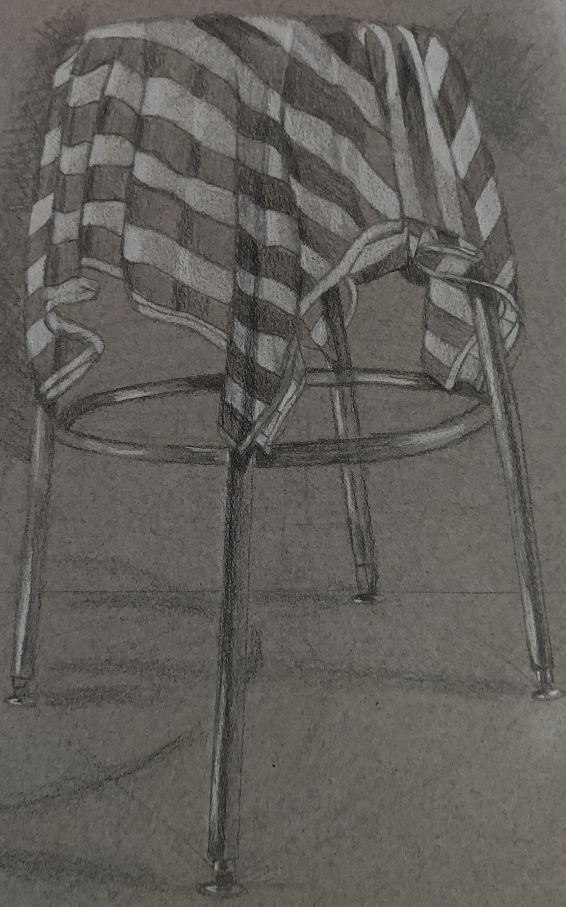
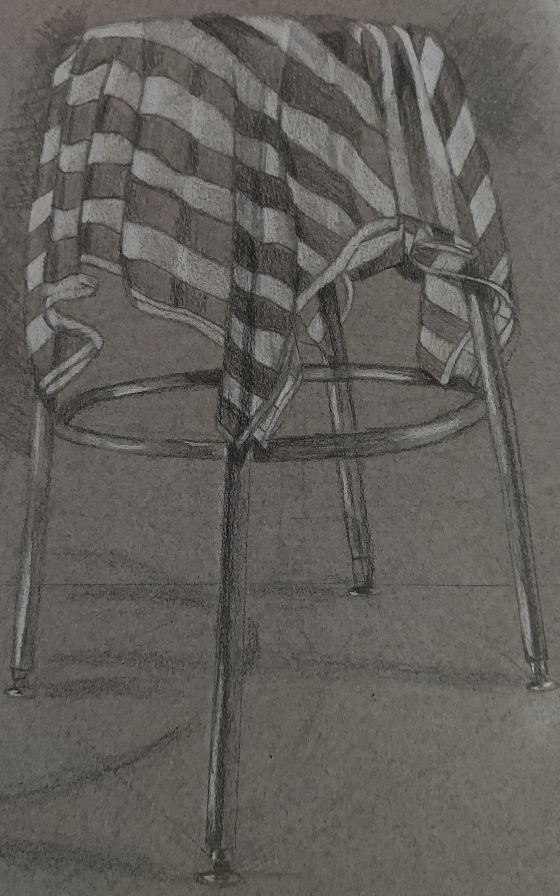

Drawing has been a way to help me relax. These works were created in high school and college. I have used drawing to escape reality and destress from hard course work.
In college we focused our drawings on still life work. This was a hard change from what I had done in high school and what I would doodle to relax. However, the class was helpful in teaching me to focus on the object in front of me and not the paper. I focused on drawing the shapes of the object, rather than just the outline as a whole. Drawing in college has also helped to improve my ability to shade.

 
